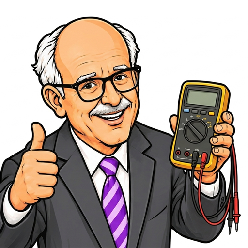
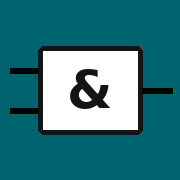

HFS-Simulatoren für Kolleginnen und Kollegen
Hier finden Sie die Simulatoren der Hans-Freudenberg-Schule zum Weitergeben. Sie laufen direkt im Browser, ohne Konto und ohne Installation, auf PC, iPad und Handy. Nach dem ersten Öffnen funktionieren sie auch offline.

HFS-Schaltungssimulator
Version 2.6Stromkreise (LF1), Installationsschaltungen (LF2), Schützsteuerungen (LF3), Elektronik (ab LF5) und Brettaufbau mit Verteiler. Mit Multimeter, Spannungsprüfer, Oszilloskop, Installationstester und Fehlersuche.
▶ Öffnen

HFS LOGO Lab
Version 2Kleinsteuerungen programmieren und testen: Funktionsplan mit Grund- und Sonderfunktionen, Simulation am Bedienfeld.
▶ Öffnen
Anleitung iPad
Stand V2.6Anleitung zum Schaltungssimulator auf dem iPad: weitergeben, als App ablegen, bedienen, speichern und abgeben.
📄 Ansehen
Teilen: QR-Code und Link
Hinweise
So setzen Sie die Simulatoren im Unterricht ein
- QR-Code oben erzeugen und am Beamer zeigen oder ausdrucken. Die Schülerinnen und Schüler scannen ihn mit der Kamera.
- Oder den Link kopieren und in Moodle, Teams, eine E-Mail oder einen Messenger einfügen.
- Auf iPad und Handy über Teilen → Zum Home-Bildschirm als App ablegen. Dann starten die Simulatoren ohne Adressleiste und auch offline.
- Schaltungen speichert jedes Gerät für sich im Browser. Für Abgaben exportieren die Lernenden eine Datei („Abgeben“ im Simulator) und laden sie dort hoch, wo Sie es vorgeben, z. B. in Moodle.
Datenschutz und Sicherheit
- Kein Konto, keine Anmeldung, keine Werbung, kein Tracking.
- Projekte und Einstellungen bleiben auf dem Gerät. Die Seiten schicken keine Daten an einen Server.
- Jede Seite enthält eine Sicherheitsregel (Content-Security-Policy): Sie lädt nur Dateien von dieser Adresse und sperrt das Senden an fremde Server. Auch der QR-Code wird auf dem Gerät erzeugt.
- Wie jeder Webserver protokolliert der Anbieter (GitHub) beim Aufruf technisch die IP-Adresse.
Nutzung und Weitergabe (Lizenz)
Die Simulatoren stehen unter CC BY-NC-SA 4.0: Sie dürfen sie im Unterricht nutzen, weitergeben und anpassen, wenn Sie den Urheber nennen, sie nicht verkaufen und Änderungen unter derselben Lizenz weitergeben.
Rückmeldungen und Fehlerhinweise sind willkommen.